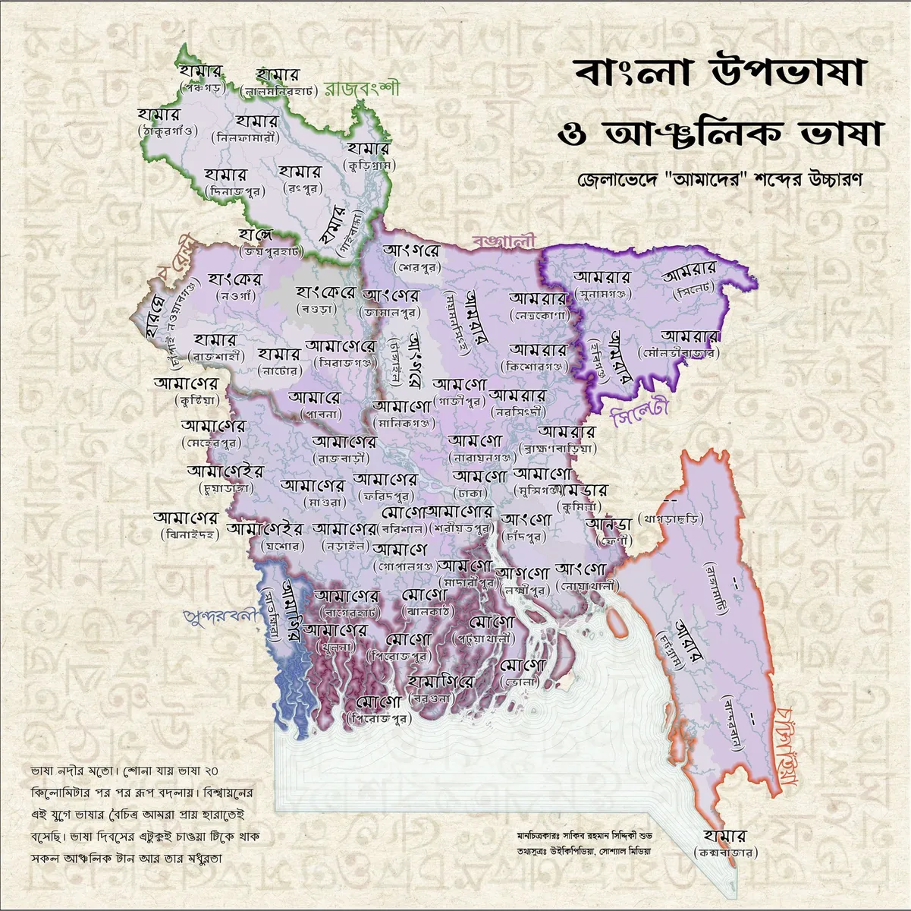
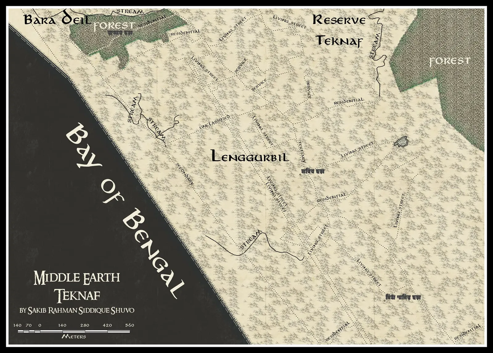
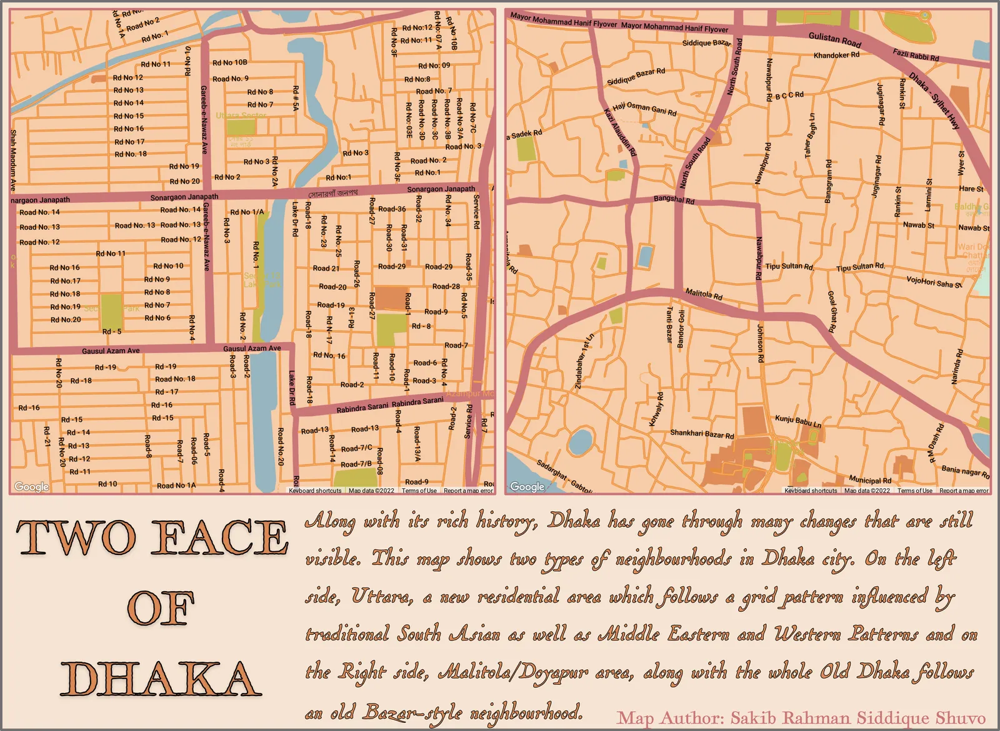
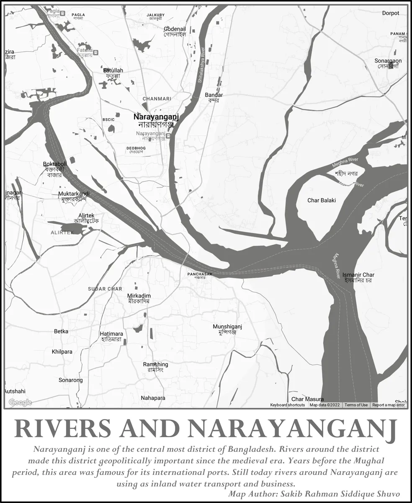

Dacca in the 20s
Reimagining the cityscape of Dacca during the 1920s in Red Dead Redemption map style

Dialects of Bangladesh
How pronunciations vary across the country

Dhanmondi Stitched
Stitching themed map of Dhanmondi, Dhaka.

Hidden Face of Dhaka
Map of Dhaka's hidden face like shape curved by Buriganga River.

Ghostbuster's Guide to Dhaka City
Mapping haunted places around Dhaka city.

Teknaf Tolkiened
Teknaf reimagined in Tolkien's Middle-earth style.

Two faces of Dhaka
Map of two contrasting settlement patterns of Dhaka city.

Rivers of Narayanganj
Mapping rivers of Narayanganj city.

Mosques of the World
Distorted world map with total count of mosques.